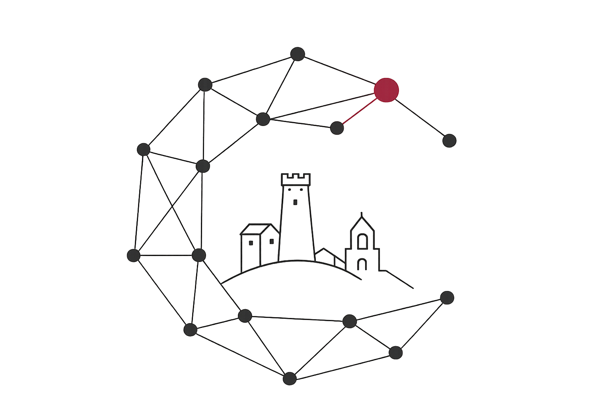

University of Camerino, Artificial Intelligence Lab
Research in core and applied Artificial Intelligence. Ricerca in Intelligenza Artificiale fondazionale e applicata.
We investigate theoretical and computational foundations of machine learning, autonomous systems, and interdisciplinary domain applications within the School of Science and Technology at the University of Camerino Il laboratorio studia i fondamenti teorici e computazionali dell'apprendimento automatico, dei sistemi autonomi e delle loro applicazioni in domini interdisciplinari presso la Scuola di Scienze e Tecnologie dell'Università di Camerino.

Research Areas Linee di Ricerca
Current research directions of the laboratory. Principali ambiti di ricerca del laboratorio.
-
01 / ML
Spatio-Temporal & Graph Learning Spatio-Temporal e Graph Learning
Theoretical and applied architectures for time-series forecasting, geometric deep learning, and spatial process modeling. Architetture teoriche e applicate per la previsione di serie storiche, geometric deep learning e modellazione di processi spaziali.
-
02 / SE
Intelligent Software Systems Sistemi Software Intelligenti
Study of machine learning, heuristic optimization, and automated reasoning for software verification and testing. Studio di apprendimento automatico, ottimizzazione euristica e ragionamento automatico per la verifica e il testing del software.
-
02 / DS
Data Science & Knowledge Engineering Data Science e Ingegneria della Conoscenza
Investigating semantic data integration, open data ecosystems, metadata generation, and the structural synthesis of knowledge graphs. Studio dell'integrazione semantica dei dati, ecosistemi di open data, generazione di metadati e sintesi strutturale di grafi di conoscenza.
-
03 / BIO
Computational & Mathematical Biology Biologia Computazionale
Mathematical modeling and complex system analysis applied to biological frameworks, structural dynamics, and signal profiling. Modellazione matematica e analisi di sistemi complessi applicate a framework biologici, dinamiche strutturali e profilazione dei segnali.
-
04 / XAI
Explainable AI & Robustness Explainable AI e Robustness
Frameworks for algorithmic interpretability, counterfactual reasoning, and robust statistical inference in decision-making processes. Framework per l'interpretabilità algoritmica, il ragionamento controfattuale e l'inferenza statistica robusta nei processi decisionali.